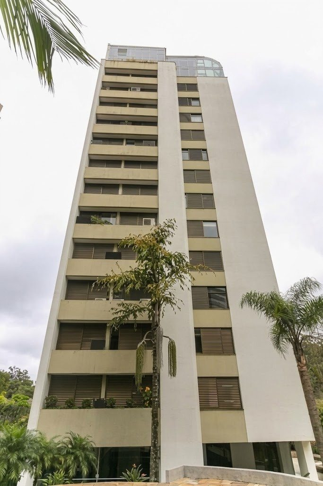

A experiência da ABRATEC em diferentes regiões se traduz em serviços técnicos conduzidos com qualidade, responsabilidade e atenção às necessidades de cada instalação. Conheça alguns exemplos de soluções aplicadas em sistemas prediais e de segurança.

São Paulo - SP
Grupo Gerador - Região Brooklin / SP
Substituição da bomba d'água e da válvula termostática do sistema de arrefecimento de um grupo gerador a diesel.
Osasco - SP
Sistema de Detecção e Alarme de Incêndio - Região Osasco / SP
Diagnóstico e recuperação por etapas de um sistema de detecção e alarme de incêndio com múltiplas centrais.
São Paulo - SP
Exaustão de Churrasqueiras - Região Tatuapé / SP
Recuperação do exaustor, com revisão do motor, tratamento anticorrosivo, substituição da junta flexível e testes de sucção.
Vila Anastácio, São Paulo - SP
Sistema de Combate a Incêndio - Região Vila Anastácio / SP
Manutenção do conjunto motobomba diesel e da rede de hidrantes, com testes de pressão e vazão.
Experiência de quem contrata
Avaliações dos Clientes
Nota geral
★★★★★
0 avaliações
5 estrelas
0
4 estrelas
0
3 estrelas
0
2 estrelas
0
1 estrela
0
“Excelente profissional extremamente capacitado.”
“Excelente Manutenção Ontem Obrigado Abratec”